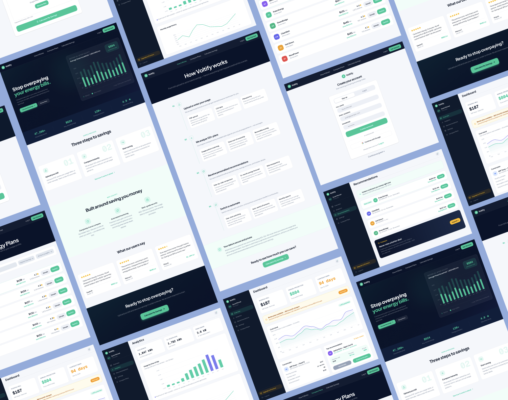
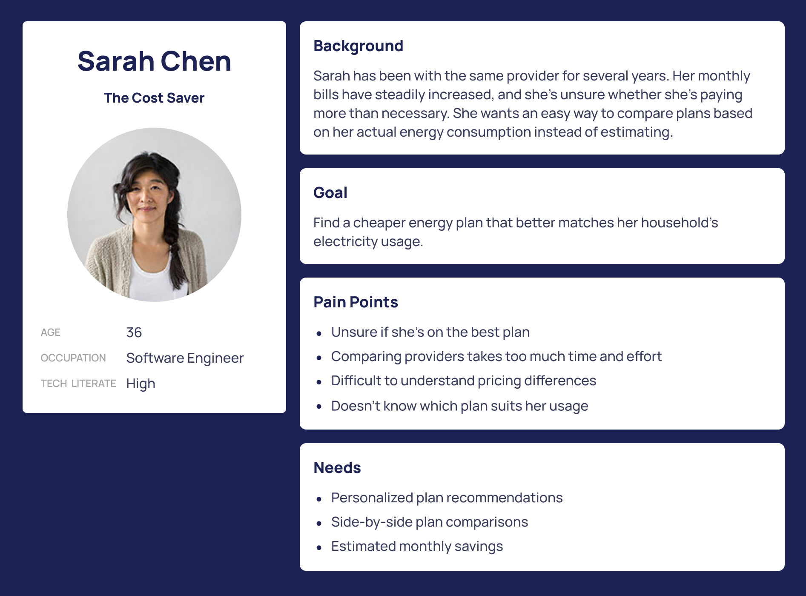
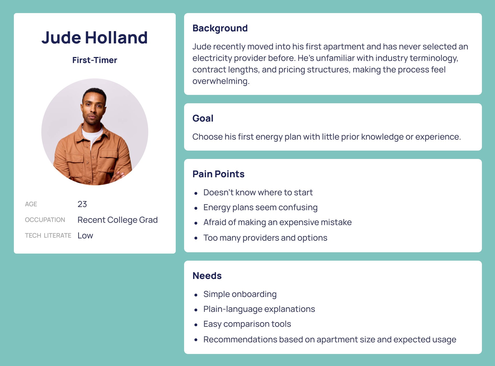
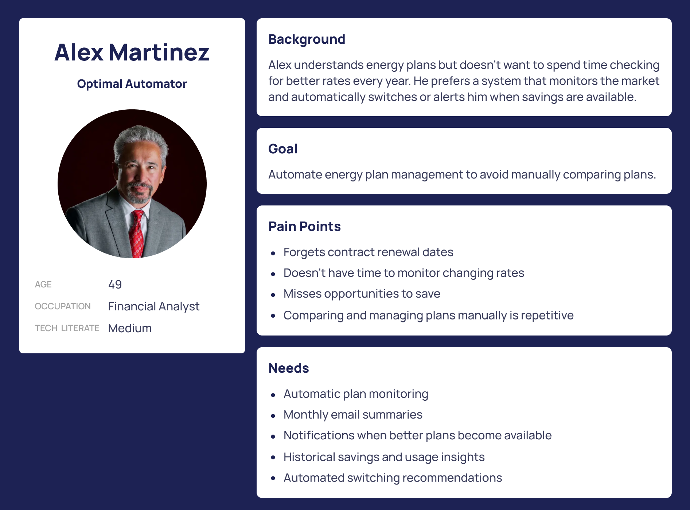

Voltify
A web platform that turns choosing an electricity plan from an afternoon of comparison shopping into a few minutes of reading — and then keeps watching the market on your behalf.
Figma · Figma Make · Claude Design

Background
Voltify is a web platform that simplifies the process of finding and managing residential energy plans. Instead of manually comparing providers and tracking contract renewals, users can upload an electricity bill or enter their energy usage by hand to receive personalized plan recommendations based on their consumption habits.
The platform also automates ongoing monitoring, notifying users when better plans become available so their bill keeps coming down over time.
The goal was to transform a traditionally confusing process into a simple, transparent experience that helps users confidently choose — and continue managing — the best electricity plan for their home.
The Problem
Choosing an energy plan is confusing and time-consuming. Consumers have to compare providers, pricing structures, contract lengths, promotional offers, and cancellation policies while estimating which option best fits their household's usage.
Many people stay on expensive plans simply because switching takes too much effort, or because they never notice the chance to save.
Design Challenge
How can we simplify choosing an electricity plan while helping users continue to save money after over time?
Research
Since this was a self-initiated concept project, I focused on competitive research and assumption-based user research to understand the pain points inside the energy comparison experience.
Competitive Analysis
Reviewing existing energy comparison sites surfaced the same handful of usability patterns again and again — and, with them, the openings this product could work in.
Key Insights
- Users want confidence more than they want dozens of choices.
- Personalized recommendations reduce decision fatigue.
- Showing estimated savings builds trust.
- Automation is what provides value after the switch is made.
Primary Users
The platform was designed around homeowners and renters looking to reduce their monthly electricity costs while simplifying how they manage their energy plan.
- Homeowners looking to reduce monthly electricity costs
- Apartment renters choosing an energy plan for the first time
- Existing customers who want cheaper plans monitored for them instead of comparing providers by hand each year
User Personas
Three personas carried the design decisions: someone who suspects she's overpaying, someone who has never done this before, and someone who never wants to do it again. Click any sheet to read it full size.



Design Process
From a map of the journey, to grayscale wireframes, to a finished interface — each stage settling one set of questions before the next one opened.
User Journey
I mapped the whole user journey first before starting on any interface designs.
Learn about Voltify› Upload Bill› See Recommendations› Compare Plans› Switch Provider› Monitor Savings
Low-Fidelity Wireframes
Grayscale wireframes let me explore layout, hierarchy, and flow before spending any time on visual styling — quick to iterate on, and enough to validate the experience end to end.


High-Fidelity Design
With the flow settled, I translated the wireframes into a finished interface built on clear visual hierarchy, card-based layouts, high contrast for accessibility, consistent spacing, and modern typography. A navy and teal palette communicates reliability while keeping primary actions unmistakable. Together these screens carry the product from a first visit through to long-term savings.


Reflection
The biggest takeaway was how much clarity matters when designing financial products. Rather than overwhelming users with every available option, revealing information progressively, personalizing recommendations, and stating potential savings plainly made the whole experience more approachable.
If I kept developing Voltify, my next steps would be usability testing with homeowners, validating the assumptions made during research, and extending the product with mobile experiences, AI-powered explanations of each recommendation, and personalized savings notifications.